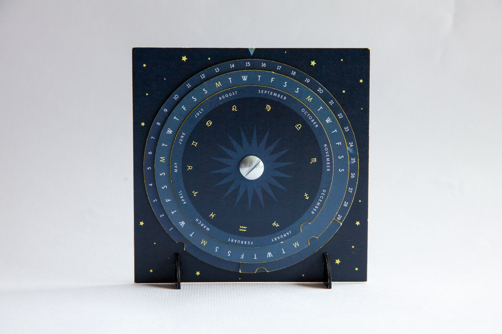
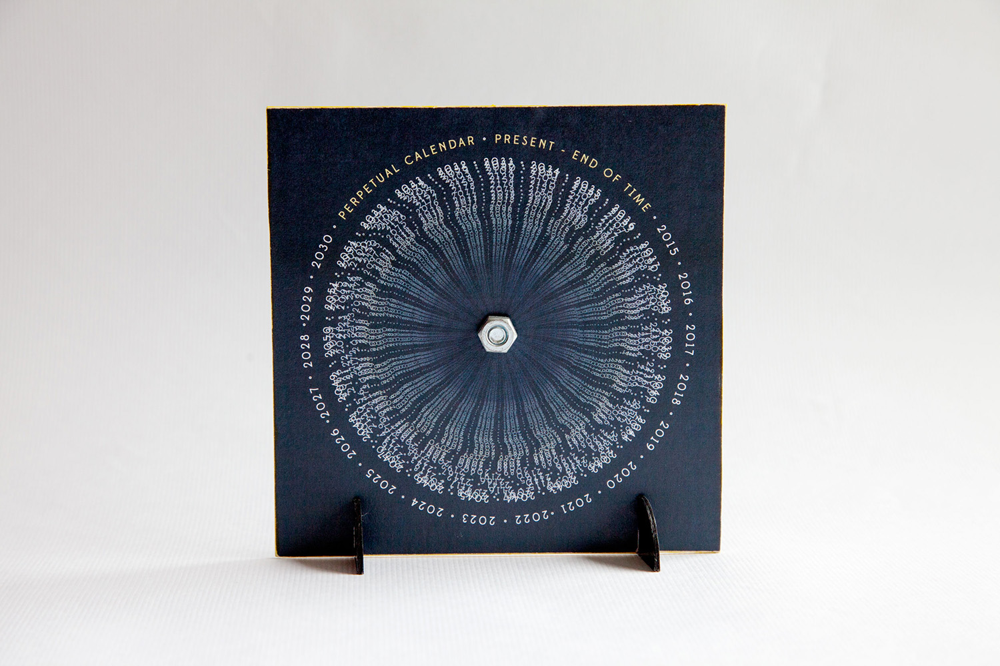
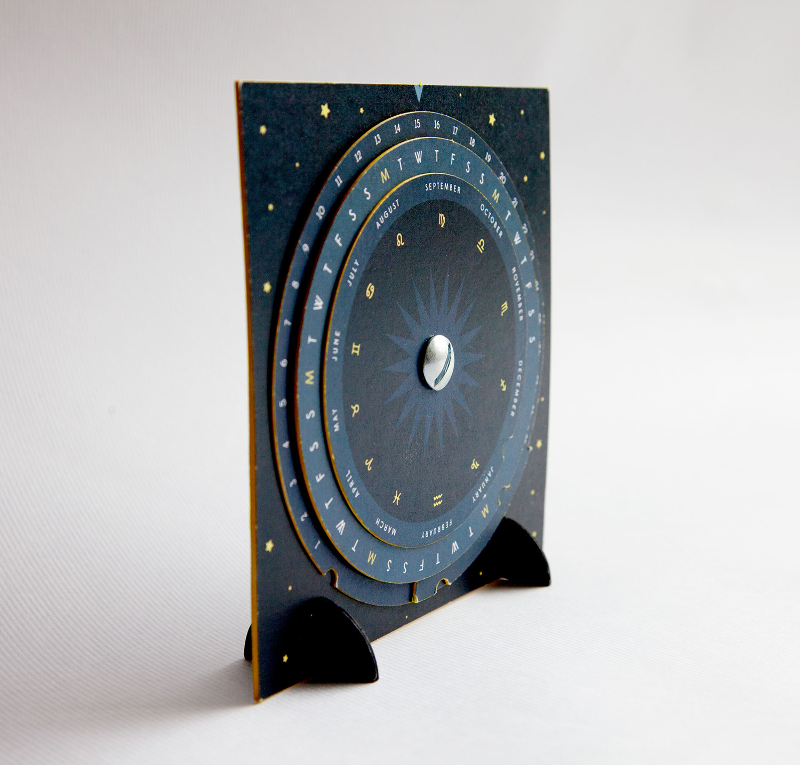
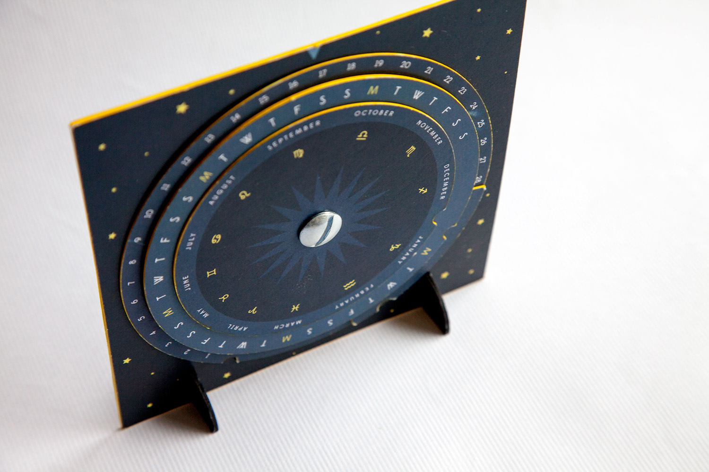
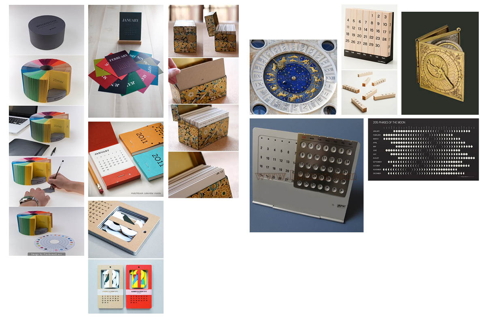
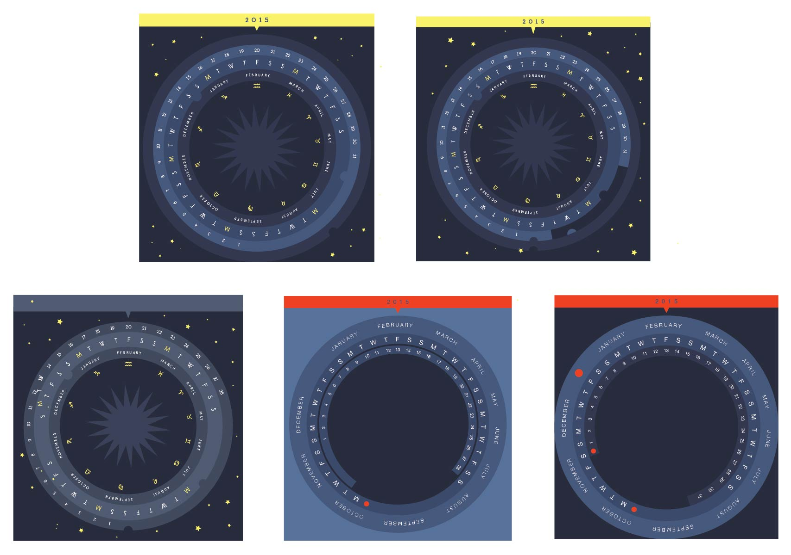
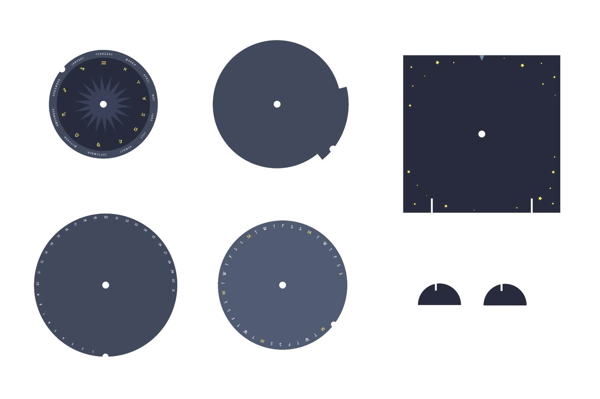

chronicle books design fellowship
The creative director asked us to create a calendar concept. I designed this astrological perpetual calendar that can be used for any year. The separate parts were created using a cutting plotter, then put together using a mechanical screw. I designed and produced this prototype from concept to execution, with the industrial designer teaching me how to implement the design with a plotting cutter. I presented the prototype to the creative director, industrial designer, and editors.




Research

Design Iterations

cut designs
